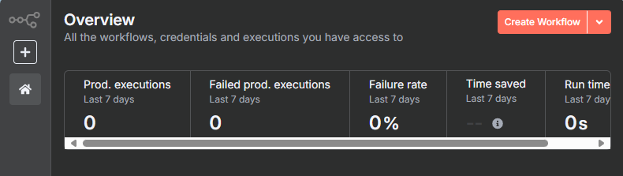

回到 n8n 點選 Create Workflow 建立第一個工作流
{kind=link}

初始畫面

點選左上重新命名工作流為 n8nDocIntoVectorDB

點選右上角 … 打開選單，接著點 Settings

將 Time Zone 改為 Asia/Taipei 後點右下角 Save

現在點選畫面正中央的 Add first step

右側會彈出一個視窗

於搜尋框輸入 form ，點選 n8m Form

繼續點選 On new n8n Form event

出現節點設置視窗，先不要慌。

Form Title 輸入 ‘檔案選擇’，然後點一下 ‘Add Form Element’

Field Name 輸入 ‘inputFiles’
Element Type 選擇 ‘File’
Multiple Files 撥到左邊
Accepted File Types 輸入 ‘pdf’
最後按一下 ESC 關閉這個設定畫面

看到跑出來了，緊接著按一下節點右邊的加號

在搜尋框輸入 ‘extract’ 並選擇 ‘Extract from File’

繼續選擇 ‘Extract from PDF’

接著在節點設定畫面的 Input Binary Field 從 ‘data’ 改成 ‘inputFile’，然後按 ESC 關閉設定畫面。

在 Extract from File 右邊加號點一下，在搜尋框輸入 supabasse，點選 Supabase Vector Store

點選 Add documents to vector store

接著會自動打開設定視窗，點選右邊的鉛筆

Credential 設定視窗

然後回到 Supabase 網頁，到 API Settings 頁面。
複製 Project URL 貼到 n8n 的 Host 欄位
複製 Supabase 的 service_role 貼到 n8n 的 Service Role Secret 欄位
最後點選右上角的 Save，會出現認證成功訊息。


接著會自動回到節點設定畫面，我們點選 Table Name 比較寬的那個下拉選單，選擇我們之前建立的 ‘nhi_drug_768’。
然後按一下最下面的 Add Option

將 Query Name 從 match_documents 改成 match_nhi_drug_768
然後按 ESC 關閉設定畫面

現在的工作流會長這樣，點選 Supabase Vector Store 節點左下的鬚鬚

選擇 Embedding model，這邊我們先選擇 Embeddings Google Gemini

接著下拉點選 Create new credential

改名稱，然後貼上 API Key

忘記 API Key 的可以回到 Google Cloud 查閱

貼上 API key 後按右上的 Save，然後按旁邊X關掉畫面。


接著下拉選擇 models/test-embedding-004，然後按 ESC 關閉畫面。

此時可以看到左下的鬚鬚長出一顆圓球

這時候看到 Supabase 節點還是紅的，代表還有問題沒解決，此時點右下角的鬚鬚。
點選 Default Data Loader

點選 Add Option，然後點 Metadata。

接著點 Add property

Name 輸入 fileName，Value 貼上
{{ $('On form submission').item.json.inputFile.filename }}
並確認這個小格子的右上方的 Expression 是亮的。

此時換成右下鬚鬚紅了，直接點一下它的加號

選擇 Recursive Character Text Splitter

改成 200，然後按 ESC 關閉設定畫面。

這時候的畫面，點一下 Execute workflow 首次觸發

點選 ‘選擇檔案’，然後選擇要寫入向量資料庫的檔案後，點選 Submit。
示範檔案可以到此下載 : 最新版藥品給付規定內容(整份帶走)-114.04.25更新-衛生福利部中央健康保險署-健保服務-健保藥品與特材及醫療服務-健保藥品-藥品相關法規與規範-藥品給付規定-最新版藥品給付規定內容(整份帶走)

此時會發現背後開始偷偷跑了，有點措手不及但是沒關係，先關掉這個 Submit 視窗。

看一眼剛剛執行成功的 Executions

此時回到 Supabase 網站，打開我們的資料庫，就可以看到剛剛寫入的資料了。

此時還有最後一個步驟：刪除重複資料
在 Extract from File 節點右邊的線上面按一下加號

輸入 supabase 搜尋，然後點選 Supabase

下一層繼續選擇 Delete a row

這邊點選 Table Name or ID 並下拉選擇 nhi_drug_768

Select Type 點選下拉，選擇 String。

在 Filters (String) 貼上下面的字串，然後點一下格子右上的 Expression。
metadata->>fileName=like.{{ $('On form submission').item.json.inputFile.filename }}
關掉後，會看到剛剛的 delete 節點流落在外

把它拉到 Supabase Vector Store 上方，並且從 Extract from File 拉一條線連接起來

再次啟動工作流，並且選擇同一個 PDF 檔案上傳。

等待跑完，觀察 delete: row 節點有沒有數量，有就對了。

至此完成將檔案塞到向量資料庫的工作流，並且遇到同檔名的時候會先刪除舊資料，避免重複塞入。